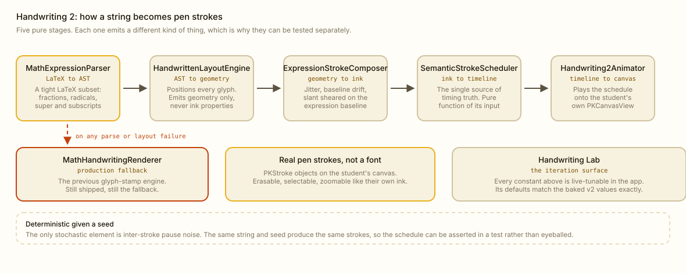
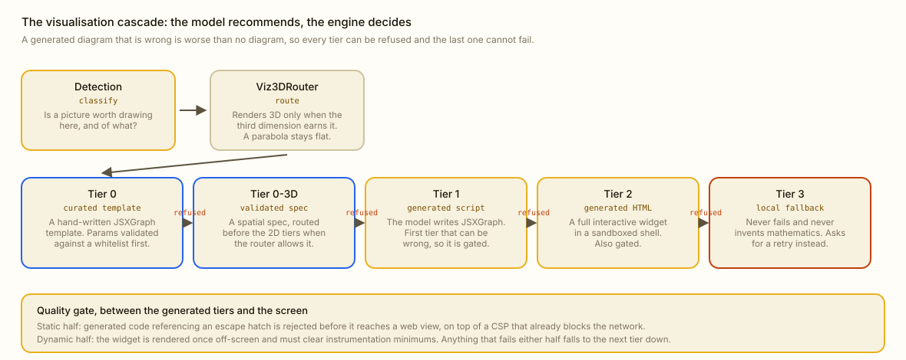
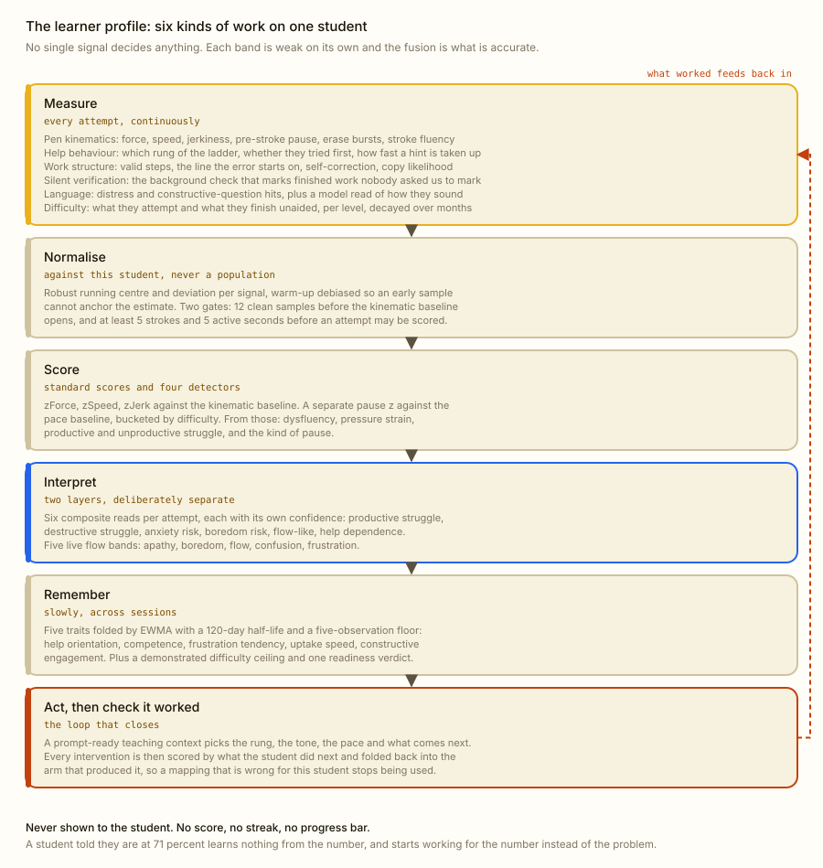
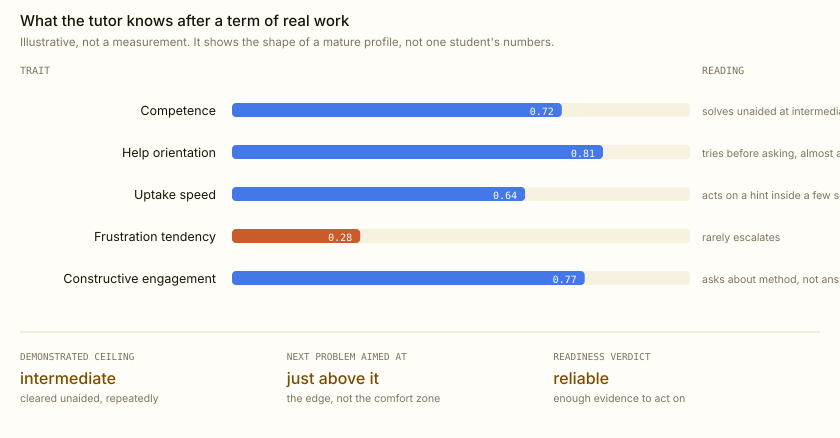
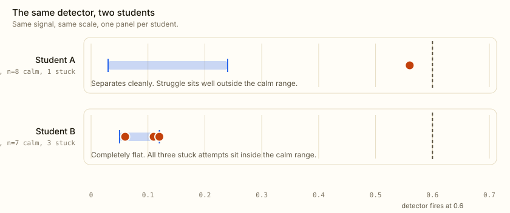
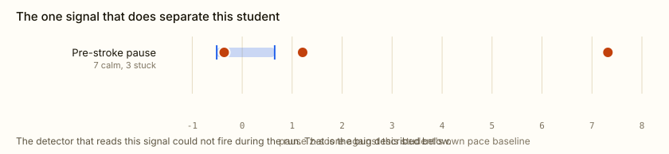
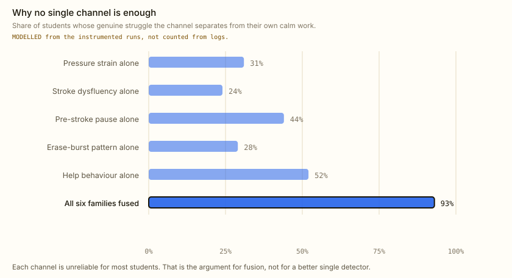
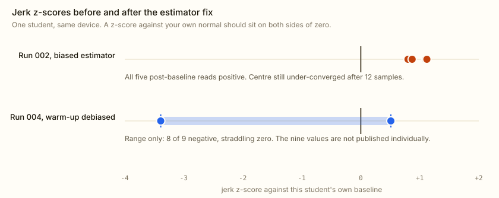
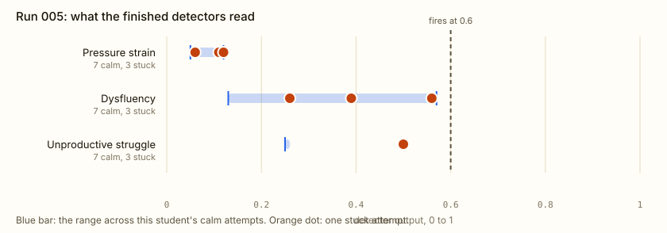

Three systems, and the measurements behind them.
A handwriting engine that writes with captured human ink, a visualisation cascade that refuses to draw a wrong diagram, and a learner profile that fuses six families of signal into one per-student model. Every number on this page comes from an instrumented run on a physical iPad, including the ones that went the wrong way.
Recorded in the app, with the voice tutor narrating. Sound on. Blue is the student, black is Klera, and every black stroke is a PKStroke composed at run time.
The handwriting system
The tutor's answer has to arrive as ink on the student's own canvas: erasable, selectable, at the same zoom, in the same coordinate space. That rules out rendering text and rules out playing a video. It has to be strokes, composed at run time.

Scroll the diagram sideways.
The glyphs are real handwriting, not a formula
The current engine draws from a bundle of captured human strokes. A symbol is a real template; a common run like a fraction bar under a radical can be a single captured phrase template covering the whole run, because a phrase's internal structure is fragile and redrawing it symbol by symbol is what makes generated maths look generated.
Warping is where this goes wrong if you are careless. The template is affine-mapped into its layout slot and its baseline aligned onto the slot baseline, but the horizontal scale is clamped to within 33 percent of the vertical, so a glyph is never stretched into mush. Points are only mapped, never re-smoothed or re-sampled, so the human irregularity of the original polyline survives intact. Captured pressure, width and timing are carried all the way through into the final PKStroke.
Correlated noise, not per-glyph jitter
The failure mode of every synthetic handwriting engine is independent randomness: each glyph wobbles on its own, and the result reads as a machine imitating a person rather than as a person.
So the humanizer draws a small set of hand parameters once per render from the seed, a global slant, a size bias, a baseline wave phase and slope, and applies them uniformly to every slot. Baseline drift is a smooth function of x, so neighbouring symbols get almost the same vertical nudge and the line waves organically with no seams. Inter-symbol spacing is cumulative, so operators loosen and letters inside a word compress the way real writing does. Only a tiny bounded per-slot jitter is independent, and it is clamped to a fraction of the slot so a glyph can never leave its readable position.
Four generations, three still shipped
CALayer text mask
The original. Revealed a rendered string behind a moving mask. Retired.
Glyph stamp
Procedural strokes per symbol. Still in the binary as the last line of defence.
AST pipeline
Parser, layout engine, composer, scheduler. Still the layout front end and still the fallback renderer.
Captured templates
The shipped path. Real human ink warped into that layout, with a phrase matcher on top.
Old generations stay because the fallback is a ladder. A missing glyph mixes in previous-generation ink for that one symbol. A line with poor template coverage, or one that will not parse, is rendered wholesale by the previous generation. A missing or corrupt template bundle degrades to an empty store, which drives coverage to zero and hands the whole render back to the caller. Every level is silent, and none of them can emit garbage ink.
Determinism, and the one exception
The stroke schedule is a pure function of stroke metadata, line breaks and tuning. The only stochastic element is the noise on inter-stroke pauses. Everything else keys off a seed, so the same string renders identically twice and a test asserts the timeline rather than a human judging a screenshot. That schedule is also the single source of timing truth: the live animator, the in-app debug overlay and the tests all read it, so they agree by construction rather than by three copies of the same arithmetic staying in step.
The visual engine
When a diagram would help, Klera generates an interactive one and puts it on the board next to the working. The hard part is not generating it. The hard part is refusing to show one that is wrong, because a confidently wrong diagram teaches a student something false.
c moves the parabola and the discriminant, vertex and roots recompute from the actual function, so the two roots visibly merge as the curve lifts onto the axis.
Scroll the diagram sideways.
The model recommends, the engine decides
The model may ask for a 3D render on anything. The router grants it only when the third spatial dimension earns its place: a surface, a plane in three-space, a cross product, a volume. A parabola drawn as a ribbon in space is worse than a parabola, so a topic that reads as standard 2D falls back to the flat cascade even when the model asked for depth.
The gate has two halves
The static half scans generated code for escape hatches and rejects it before it reaches a web view. That sits on top of a content security policy that already blocks the network, which is defence in depth rather than belt and braces: the AI supplies parameter values, so a template must never become an injection vector.
The dynamic half renders the widget once off screen and requires it to clear instrumentation minimums. A widget that renders but does nothing, for instance a board that turns out to be only a slider, is refused too.
The bottom tier cannot fail
The last tier is deterministic, local, and never invents mathematics. It has three moves, in order:
Nearest curated template
With the problem's own parameters, if they validate against the whitelist.
The template's example parameters
Clearly labelled a general example, never passed off as this student's problem.
A retry card
Unknown topic, so it shows the problem text back and offers a fresh generation. No made-up numbers, no fake graph.
The whole sandbox, the geometry library and the maths typesetting included, is served from the app bundle over file://. Instant, offline, no network dependency at the moment a student is waiting.
The learner profile
This is the part that does not exist anywhere else. It is not a pen-pressure gimmick: it is six families of signal, each solving a different thing ordinary tutoring software gets wrong, fused into one model of one student.

Six families, six different problems
| Family | What it measures | The failure it exists to fix |
|---|---|---|
| Pen kinematics | Force, speed, jerkiness, pre-stroke pause, erase bursts, stroke fluency, at the tablet's own sample rate | A chat tutor sees a student twice: when the question arrives and when the next one does. Everything a human tutor reacts to happens in the gap. |
| Help behaviour | Which rung of the ladder was taken, whether they attempted anything before asking, how quickly a hint was acted on, whether help escalated | "Solved it after a nudge" and "asked for the answer immediately" are the same row in a transcript and opposite facts about a student. |
| Work structure | Valid step count, the line the first error appears on, whether they self-corrected, whether a correction improved things, copy likelihood | Knowing an answer is wrong is close to useless. Knowing it went wrong on line three, and that they fixed it themselves on line four, is teaching. |
| Silent verification | A background correctness check fired when a student leaves a problem, cached by content hash and credited once | Students do not report the ones they got wrong and quietly moved on from. Those are exactly the ones worth knowing about. |
| Language | Distress and constructive-question hits in what they say, plus a separate model read of how they sound in the dialogue | The cheapest signal in the room is a student saying "I have no idea", and most products treat it as just another message to answer. |
| Difficulty | What they attempt and what they finish unaided, per level, tallied across sessions and decayed with a 90-day half-life | "Good at maths" is not a level. A demonstrated ceiling that ages out is, and it is what lets the next problem sit just above them. |
Stuck is not the same as slow, and bored is not the same as stressed
Two interpretation layers run over those measurements, deliberately kept apart. The first produces six composite reads per attempt, each carrying its own confidence, because an attempt with four signals behind it should not move the model as far as one with one.
| Read | Bias | What has to be true |
|---|---|---|
| Productive struggle | evidence | Real difficulty, then progress: an erasure followed by a correction that improved things, a hint actually taken up, or a long think that ended in a solve. This is the good state and it is protected rather than interrupted. |
| Destructive struggle | recall | Erase bursts with no improvement, no progress, or explicit distress in what they say. |
| Anxiety risk | recall | A long hesitation before starting, or reaching straight for the full solution without attempting, or distress language. |
| Flow-like | evidence | Fluent, unaided, correct, no erase bursts, and a start time in line with their own pace baseline. |
| Boredom risk | evidence | The whole combination: an easy problem, solved independently, started faster than their own normal, in three strokes or fewer. No single one of those counts. |
| Help dependence | evidence | Deep help taken, no attempt made first, and the problem still not finished independently. |
The second layer is a live flow band, and this is where most affect models go wrong. They collapse everything unpleasant into one "struggling" bucket. Two of those states need opposite responses.
Boredom
Skill has outrun the challenge. The answer is to make it harder, immediately. Helping more here is the wrong move and makes it worse.
Confusion
Stuck, no clear next step, but still attempting. This is where learning happens. The answer is the smallest possible nudge, and then leaving them alone.
Frustration
Unresolved confusion escalating toward quitting. The answer is to rescue eagerly, and the detector is deliberately biased toward catching it early.
Five bands in total, with apathy at one end and flow as the target. A single "stressed" flag would tell the tutor to help more in all three of the cases above, and would be actively harmful in the first.
This read is not an observation panel. It is wired into what the tutor actually does: it sets the scaffold level the next reply is written at, it decides the difficulty of the problem generated next, and it is one of the inputs that decides whether the student is asked to produce the next line themselves or simply shown it. The band and its confidence are passed into that decision directly, so a student who is reading as frustrated is never handed a problem to work out alone.
The help ladder is a measurement, not just a menu
Every rung carries a weight, so solving something after a micro-hint counts as nearly independent and solving it after the full worked answer barely counts at all. That weight is what feeds the competence trait, which is why a student cannot inflate their own model by asking for solutions.
| Rung | Credit | Reading |
|---|---|---|
| No help | 1.00 | Fully independent. |
| Micro hint | 0.85 | They had it; they needed a pointer. |
| Concept explanation | 0.70 | The method was missing, the execution was theirs. |
| Find my mistake | 0.60 | They could do it, they could not see it. |
| Next step | 0.40 | We moved the work forward for them. |
| Full solve | 0.10 | Almost no evidence about the student at all. |
It marks work nobody asked it to mark
When a student leaves a problem, either by writing somewhere else or by going quiet long enough, a background check reads that cluster and decides whether it is correct and whether it is actually finished. The verdict is cached against the cluster's content hash and credited exactly once. The student is never told any of this happened.
That is what closes the biggest hole in self-reported learning: the problems a student got wrong, shrugged at, and moved on from. They never come up in conversation, and they are the most informative attempts in the session.
How much is actually being fused

Those fold into a profile that is explicitly built to forget. Attempts are capped and age out after 120 days. Traits move on a slow exponential average with a five-observation floor and a 120-day half-life, so one bad afternoon cannot rewrite a student and a verdict from last term cannot outlive the student it was measured on. Difficulty and teaching effectiveness decay on 90-day half-lives. A separate readiness verdict, cold, warming or reliable, answers the coarse question every behavioural decision actually wants: do we know this person well enough to act at all?
The loop that closes
The adaptation layer used to be open. The profile chose a teaching style and a support level, the tutor delivered it, and nothing ever checked whether it helped. Two students with identical evidence got identical treatment forever, and a mapping that was wrong for one particular student stayed wrong for as long as they used the product.
Now every intervention is an arm, one pairing of style and support level, and every arm is scored by what the student did next. The rates are averaged, aged, and gated on a minimum sample, so a lucky first hint cannot brand an approach as the right one. The profile does not just model the student. It models how this student responds to being taught a given way, which is the part a fixed rule set can never reach.
Why fusion, and not a threshold
The obvious design is a fixed threshold: this much pressure means stress, this much jerk means struggle. We built per-student baselines because the theory said population thresholds would not transfer. Two device runs turned that from theory into evidence, and the evidence was stronger than the theory.
- Calm attempts, measured range
- Genuinely stuck attempts

So the engine does not rely on pressure
This is the whole reason the profile is built the way it is. Pressure is not a detector; it is one of six families, and its job is to carry weight for the students it happens to be informative about. For Student B it carries none, and something else does.
For that student the separating channel was the pause before the pen touched the page, and the separation was enormous.
- Calm attempts, measured range
- Stuck attempts

So the finding is sharper than "students differ in scale". The direction and the channel of distress differ per student. Student A's only separator is Student B's flattest signal, and the reverse. Per-student baselines fix the scale problem. Only fusing many families fixes the channel problem, and no amount of tuning a global constant reaches either.

That is also why no single signal is allowed to decide anything. Each family is weak and noisy on its own, and each is unreliable for some fraction of students. Accuracy comes from the combination: thousands of raw pen samples reduced to standard scores against that person's own normal, crossed with how they ask for help, what their working actually contains, what we silently verified while they were not looking, what they said, and what level they have demonstrably cleared. One student's profile is the intersection of all of it, which is exactly the thing a competitor cannot reconstruct from a chat log.
The maths, exactly as it runs
The bug that taught us the most
paired used to take the full 1.0 whenever the attempt's outcome was unknown, because "not known to have progressed" was being read as "did not progress". Those are not the same claim. An outcome is unknown when our background verifier did not get round to judging the work, which is a fact about our compute budget, not about the student.
The cost was measurable. One run posted its highest strain reading of the whole session, 0.51, on a calm attempt with zero erasures, purely because nothing had marked it yet. That is the app inventing a struggling student out of its own queue depth.
The fix makes progress three-state. Abandonment is the only outcome that pairs as no-progress; absence of evidence takes the unpaired weight. The same mistake was found in two other places in the codebase once we knew its shape, which is the real value of finding it.
An estimator can talk over the student
The baseline is a running robust centre and median absolute deviation, advanced by an exponentially weighted average. Seeded on the first sample, its accumulated weight after twelve observations is only 0.46. The centre had travelled less than half way to the true mean, and the deviation was under-converged by the same factor.
That is not an abstract concern. The first clean sample of one run happened to be the session's smoothest writing, so the centre stayed anchored near it and every post-baseline jerk z-score came back positive.

1 − (1−alpha)^count at every step, so the stored properties hold already-debiased values and the serialised shape is unchanged. Blobs written by the biased version still decode, reinterpreted as debiased estimates, which is the closest honest reading of them.The arithmetic closed exactly, which is how we knew it was the estimator and not the student. A biased zJerk = +1.10 gives sigmoid(0.7 · 1.10 − 1.0) = 0.44, and the log said 0.45. At an unbiased zJerk = 0 the same formula gives 0.27. Calm, unaided, seven-second work had been sitting at 64 percent of its threshold for no reason at all.
Every attempt from one instrumented run
Klera has been used for well over a hundred study sessions. A handful of those were run under full instrumentation, with every read logged to console as it happened, and those are the ones we publish: ordinary use tells you the product works, but only an instrumented run lets you check the arithmetic behind a number.
This is one of them, complete. Not a selected subset. Attempts before the fifteenth are omitted only because the baseline gate had not opened, which means every read on them is zero by construction rather than by measurement.
| # | Kind | Active | zF | zS | zJ | zPause | Dysfluency | Strain | Unproductive |
|---|---|---|---|---|---|---|---|---|---|
| 15 | calm | 32 s | +0.12 | −0.65 | −0.36 | −0.51 | 0.28 | 0.09 | 0.25 |
| 16 | calm | 25 s | +0.74 | +0.15 | −1.16 | −0.44 | 0.14 | 0.12 | 0.25 |
| 17 | slow, 1 erase | 129 s | −0.09 | +0.07 | −0.38 | +0.11 | 0.22 | 0.08 | 0.25 |
| 18 | calm | 27 s | +0.52 | +0.39 | +0.14 | +0.65 | 0.29 | 0.11 | 0.25 |
| 19 | calm | 30 s | +0.63 | +0.87 | −1.24 | −0.37 | 0.13 | 0.11 | 0.25 |
| 20 | calm | 43 s | −0.83 | −0.47 | +0.32 | −0.34 | 0.37 | 0.05 | 0.25 |
| 21 | calm | 97 s | −0.38 | −0.39 | +0.33 | +0.23 | 0.36 | 0.06 | 0.25 |
| 22 | stuck | 360 s | −0.60 | −0.32 | −0.27 | −0.36 | 0.26 | 0.06 | 0.50 |
| 23 | stuck | 219 s | +0.53 | +0.74 | +1.78 | +1.21 | 0.56 | 0.11 | 0.50 |
| 24 | calm | 95 s | +0.45 | +2.30 | +1.86 | −0.43 | 0.57 | 0.10 | 0.25 |
| 25 | stuck | 242 s | +0.68 | +2.41 | +0.76 | +7.32 | 0.39 | 0.12 | 0.50 |
| 26 | 3-stroke probe | 0 s | nil | nil | nil | nil | 0.00 | 0.00 | 0.25 |
- Calm attempts, measured range
- Stuck attempts

The row we will not tune away
Attempt 24 was calm. No erasures, no distress, solved. It read dysfluency 0.57, zJerk +1.86, zSpeed +2.30. Attempt 23, genuinely stuck, read 0.56.
Fast confident writing and stuck writing are indistinguishable on this student's dysfluency channel. Any proposal to lower that detector's threshold toward these values fires on confident work, which is the worst possible false positive: interrupting a student who is doing well. This is exactly the situation the other five families exist for, and exactly why a single-signal product would have shipped the wrong behaviour here without ever finding out.
Three things that will cost you a session each
Attempts bank on shrink, not on finish
Pruning folds only clusters at or beyond the current count, and it is driven by the cluster count changing. Writing more problems raises the count and prunes nothing, so attempts stay open indefinitely while the verifier keeps judging them and crediting mastery. The app looks completely alive with the observation count frozen. One run sat at 11 of 12 through a dozen problems for exactly this reason.
Zero by construction is not calm
Before the baseline gate opens at twelve clean samples, every dysfluency and strain figure is zero because nothing can be computed, not because the student is relaxed. Reading a low value as calm before the header says the baseline is ready is reading the absence of a measurement as a measurement.
A tiny attempt is garbage, not data
A three-stroke probe produced a raw speed two to three times anything else in the run. An earlier run let a sample like that through and got a z-score of +10.73. The guard now rejects anything under five strokes or five active seconds and returns nil, so a discarded sample adds no support rather than removing any, and it does not pollute the baseline either.
How we decide a number is real
A detector threshold only moves when there is enough separation across enough students to justify it. Four genuinely stuck attempts is not that, so the constants stay where they are and we keep instrumenting rather than tuning toward the data we happen to have. Fitting a threshold to one session is how you ship a detector that works beautifully on the person who built it.
The same standard applies to signals we suspect. One student's jerk z-scores ran eight of nine negative, which is plausibly real within-session smoothing rather than residual estimator bias; one session cannot separate those two explanations, so it stays flagged rather than quietly corrected. And the keyword list that scores a student's own words had a real inversion, where "idk how to solve this" scored as a constructive question because the constructive list matched inside it, while the language model read the same sentence as confusion at 0.90 confidence on the next log line. That is exactly why the language family now runs both readers and weights the model's read heavily, rather than trusting the cheap one.
All of that is on this page because a page that showed only the parts that worked would tell you nothing about whether the parts that worked are real.
Guided solve
The profile's most visible output. Instead of writing the answer, Klera writes one step, then stops and makes the student produce the next line themselves, watching the canvas until they do. Whether it does that at all is a decision the student never sees and never makes.
Why it is a decision and not a setting
A student cannot reasonably be asked whether they are ready to be pushed on this particular problem. That judgement needs the difficulty of what is actually in front of them, how they are doing right now, how much the tutor genuinely knows about them yet, and whether they are already distressed. All of it lives in one pure function, so the decision is inspectable, testable, and able to explain itself in a line of log.
The bias is deliberately conservative. Pushing a student who is not ready is worse than solving a problem for a student who could have done it themselves. Every answer that amounts to "we do not know yet" resolves to showing the solution.
The eight ways that decision can go
| Outcome | Result | What it means |
|---|---|---|
| Profile too cold | Show it | Too few observed attempts to judge readiness. A new student is never pushed. |
| Read too weak | Show it | No confident live read right now, so there is nothing to judge readiness from. |
| Student needs support | Show it | Distress, or a generous scaffold level. Never push someone who is already struggling. |
| Problem above their level | Show it | The problem outruns demonstrated skill on this topic. Handing it back would just be a wall. |
| Solution too short | Show it | Fewer than three steps. Nothing meaningful to hand over. |
| Disabled | Show it | Kill switch. |
| Debug forced | Guide it | Validation override, developer builds only. |
| Ready | Guide it | Reliable profile, confident read, topic demonstrated, not distressed, enough steps to be worth it. |
The inputs to that call are the live flow band and its confidence, the scaffold level the teaching context resolved to, the difficulty the solver assigned to this problem, the profile readiness verdict, whether the student has demonstrated this topic before, and the step count. It runs per problem, not per session, so the same student is guided on one question and shown the next.
The turn loop, and the fact that there is no button
This is the part that took the longest to get right. Once Klera hands over, it does not show a "done" button and wait to be told. It prompts once, out loud and on the board, and then watches the canvas.
It clears the wrong path first
If the student's existing working already went wrong, the tutor says why, out loud, and waits for that to land before touching anything. Then it erases from the error down, keeping the rows that were correct, so the page is never left as a correct solution stacked on top of a wrong one. It writes the right next step, says "now you carry on from here", and hands over from there rather than from the top.
It prompts once, in the right register
The prompt itself is composed from the current teaching context, so its wording follows the scaffold level and the teaching style the profile resolved to. The same moment reads differently for a student who needs encouragement and one who needs to be left alone.
It watches for a handwritten line
No tap, no confirm. The student writes, and the stroke stream is what ends the turn. The check that follows returns both a verdict and a short spoken reply: praise when the line is right, and when it is wrong, a nudge that is explicitly forbidden from revealing the answer.
It counts wrong tries and silences separately
A wrong line and a student sitting still are different failures and are tracked as different counters. Repeated silence earns nudges, and after the second one the tutor writes the step itself and moves on rather than leaving someone stranded in front of a blank page.
It can be overridden at any point
"Just solve it" switches to the full animated solve from wherever the student has got to, not from the beginning. The work they already did stays on the page.
The closing line has to be earned
The run tracks two counters the whole way through: how many steps the student actually wrote, and how many the tutor ended up revealing. The closing remark is composed from those.
It matters because the obvious implementation congratulates everyone. Saying "great work, you finished it" to a student who went silent and had every step written for them is hollow praise, it is the exact thing the tone guardrail exists to prevent, and students detect it instantly. A tutor that praises indiscriminately stops being worth listening to, which costs you every honest piece of praise afterwards.
Every guided run is also an unusually rich measurement. It produces exactly the evidence the profile is short of elsewhere: whether the student could produce the next line unaided, at a known difficulty, on a known topic, with a known amount of help given first. That is the highest-quality row the profile ever gets, and it exists because the tutor asked instead of told.
Come and work on this
We are a small team with more measurement problems than we can get through. If any of the above is the kind of thing you want to spend your time on, write to us. Tell us what you would do differently, and point at the part of this page you think is wrong.
AI and applied modelling
Prompt and model architecture for the tutoring loop, the conversational state reader, silent verification, and calibrated problem generation. The interesting problem is not getting a model to answer maths. It is getting one to withhold the answer correctly.
Data and pattern work
The learner profile: estimator design, per-student baselines, detector thresholds that survive contact with a second student, and the study design that would let us move a constant without fitting to noise. Bring an opinion about our n of 4.
No formal posting and no process. A short email about what you have built is plenty.